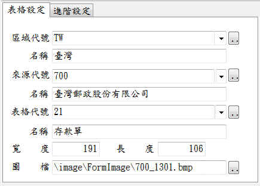

表格套印管理系統
表格管理視窗可以新增、刪除、修改表格以及管理該表格的相關資料。
表格管理視窗全覽
表格設定工作頁
- 區域代號：用來設定表格來自於那個區域(國家)，以便管理表格。
- 來源代號：用來設定表格來自於那家公司或銀行，這裏可以用輸入代碼的方式，迅速找出該銀行(來源)，例如輸入700即可找到郵局。(請注意：農會、 漁會、信用合作社因共用同一代號，故無法使用此方式取得資料)。
- 表格代號：用來區分不同的表格類型，例如支票、存取款條，以便管理表格。
- ：可以開啟另一個功能視窗，例如區域/國家管理、表格來源管理、表格類型管理等資料的管理，以及加入表格圖檔。
- 圖檔：本軟體可以藉由表格的圖檔進行視覺化的操作及設定，因此表格圖檔的品質非常重要。本軟體即使沒有圖檔一樣可以操作，就像其他的套印軟體一樣，對於套印位置及大小使用量(清)測的方式一樣可完成設定。

表格設定工作頁
進階設定工作頁
本工作頁是用於表格樣式及進階功能的設定，讓套印軟體知道要執行套印的表格的特性。
進階設定工作頁
- 表格樣式：
- 一般套印：一般的表格套印。
一般套印：相同類資料一次只印1筆，例如支票、存取款單...等均是一般套印。
- 多欄套印：內容格式完全相同，但一次可以印出一個以上的表格。常見的郵寄標籤就是屬於多欄套印。
 多欄套印：一次列印多筆資料
多欄套印：一次列印多筆資料
- 一式1聯：表格一式多聯，例如二聯或三聯式發票、匯款單...等，有複寫、留底或提供收據之類的表格，就屬於一式多聯類型的表格.
- 套印功能
- 輸入套印：任何表格本軟體均會提供匯入套印的功能，但表格是否供使用者以輸入的方式進行套印可以由表格套印設計者自行決定，因為有些表格不適合輸入套印，例如多欄式的表格。
- 套印記錄存檔：勾選此項目後，配合存檔設計，套印記錄就會自動存檔。
- 表格領用登錄：勾選此項目，配合表格領用登錄，在執行表格套印的過程中，套印軟體會先檢查已登錄之表格(如支票)數量是否足夠，並自動帶出表格編號(票號)。